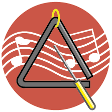
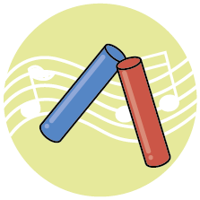
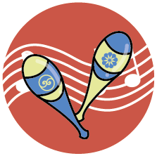
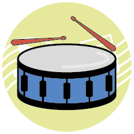
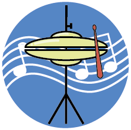
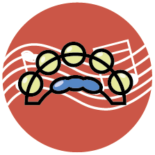
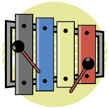

🎶Virtual Percussion Instrument Online🎶
Design decision
I found there have been a number of websites for virtual musical instruments, but I did not find one dedicated to percussion instruments during the search. I chose to create a website for virtual percussion instruments because I wanted people, with or without access to an instrument, to be able to experience the joys of percussion music.
My pairing words are "Playful" and "Feedback". I wanted to design an interactive experience that would be fun and new to the user, and that would be simple to understand. The user will be aware of the reactions and feedback that will be generated by their every move, and they will not need to guess what action to take and what the consequences of this will be. They will receive positive feedback at every step of their interaction.
The easiest way to interact is with the mouse, an action that can be achieved without any prompting. Interactions using the mouse include hover, mouse down and mouse up. I drew icons for the different percussion instruments and designed three versions of each icon to represent variations. The default icon of the instrument, the icon when the mouse hovers on it, and the icon when the mouse clicks down. The different versions of these icons show how the instruments are played, for example the drum in its default state with the drumsticks in suspension and when use the drumsticks to hit the drum, then it makes a sound. For the colours of the icons, I chose to use the three primary colours, red, yellow, and blue, to ensure that the icons have a uniform tone and do not look too confusing. I added the sheet music as the background of the icons. I also applied animation effect on these icons. The animation effects make these icons look friendly and interesting. The animation effects make the icons look friendly and interesting, which is also positive feedback for the interaction.
The audio for the instruments I have chosen to keep the audio as short as possible so that the user can experience it repeatedly with clicks. I used the getElementById command in JavaScript to specify which audio is played for each icon.
I also could not achieve my initial idea in terms of the layout of the page. I wanted the icons to appear where I had set them instead of all being in the middle, but I tried different ways to achieve this. When I wrote the coding for the animation effect in CSS, I used fit-content for width to ensure that the transform in the icons started at the centre, which resulted in only one icon per line, and I couldn't change the position of the icon to where I wanted it to be. To compensate for this, I had to sort the icons by the colour of their background to make them look more orderly.
close






